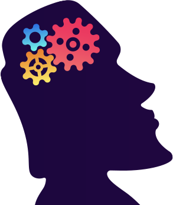
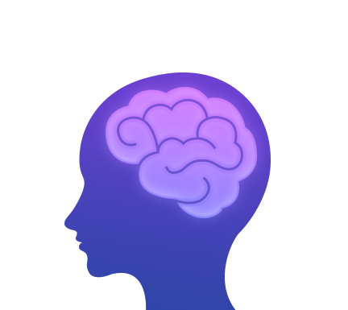
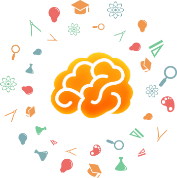
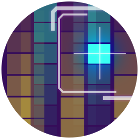

大脑是怎样的？
人的大脑是具有可塑性的，大脑内部的突触、神经元之间的连接可以由于学习和经验的影响建立新的连接，从而影响个体的行为。大脑功能的可塑性可以在整个生命周期中通过学习和训练等与环境的交互刺激来进行，经常性的刺激可以改善大脑的储备，对脑力健康有着明显的作用。


为什么要训练大脑？
流体智力（fluid intelligence）指的是信息加工和问题解决过程中所表现出来的能力，与基本心理过程有关，如知觉、机械记忆能力、运算速度、对关系的认识，类比、演绎推理能力，形成抽象概念的能力等。晶体智力（crystallized intelligence）指的是对从社z会文化中习得的解决问题得方法进行应用的能力。流体智力是晶体智力发展的基础，任何知识、经验和技能的学习都是通过大脑思维来进行的，一个人如果大脑思维能力差，那么在学习有难度的知识和技能时就会感觉吃力，反应慢。
steam课程是什么？
Steam课程是一个大脑的训练课程，活跃健康的大脑是学生学习的关键，因此我们从记忆力、专注力、反应力、空间想象能力、问题解决能力五个维度来开发了一系列的脑力训练游戏，用来提升大脑的思维能力，不仅简单好玩，又科学合理的训练了大脑，挖掘学生无限的潜力。只要每天坚持完成几分钟的游戏训练，就能稳步提升学生的核心能力。
记忆力维度训练
主要通过游戏来锻炼提高学生的记忆能力（以工作记忆为主），工作记忆是指人们在完成认知任务的过程中将信息暂时储存的系统。工作记忆可以被理解为一个临时的心理“工作平台”，在这个工作平台上，人们对信息进行操作处理和组装，以帮助我们理解语言、进行决策以及解决问题。
专注力

指一个人专心于某一事物、或活动时的心理状态。人的注意力，受多方面因素的影响，注意力缺陷，常常是许多学习差学生的共同特点。保持良好的专注力，是大脑进行感知、记忆、思维等认识活动的基本条件。从阅读文章时是否容易被打断是一个很好的例子。视觉注意力影响视野和探测能力，快速发现视野内的细微差别。
反应力
指人的思维敏捷程度，取决于处理变化、适应新环境和同时执行多项任务的能力。是在思维的过程中，能比较迅速地看出问题的本质，抓住问题的关键，从而比较迅速地做出正确的判断和决定，对新事物或事物环境的变化具有较好的判断和转化能力，思维的敏捷程度与一个人的逻辑修养、思维习惯及联想能力有直接关系。反应力是日常生活经常用到的能力，此能力能让学生在快节奏的世界像孙悟空一样拥有“分身术”。
空间想象力
是人们对客观事物的空间形式（空间几何形体）进行观察、分析、认知的抽象思维能力，它主要包括下面三个方面的内容：(1)能根据空间几何形体或根据表述几何形体的语言、符号，在大脑中展现出相应的空间几何图形，并能正确想象其直观图．(2)能根据直观图，在大脑中展现出直观图表现的的几何形体及其组成部分的形状、位置关系和数量关系．(3)能对头脑中已有的空间几何形体进行分解、组合，产生新的空间几何形体，并正确分析其位置关系和数量关系。例如，在看着地图走路时，要能准确的看懂是该往左转还有右转，就需要有视觉能力和空间意识。
问题解决能力
问题解决能力是由一定的情景引起的，按照一定的目标，应用各种认知活动、技能等，经过一系列的思维操作，使问题得以解决的过程。例如，证明几何题就是一个典型的问题解决的过程。几何题中的已知条件和求证结果构成了问题解决的情境，而要证明结果，必须应用已知的条件进行一系列的认知操作。操作成功，问题得以解决。问题解决分为四个阶段：发现问题、分析问题、提出假设、验证假设。